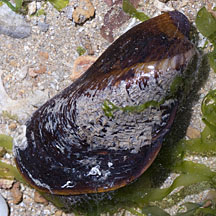
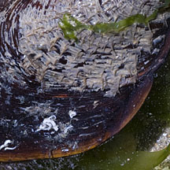
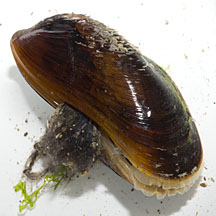
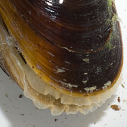
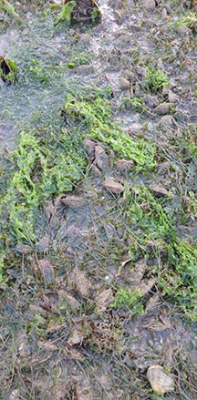

|
|
| bivalves text index | photo index |
| Phylum Mollusca > Class Bivalvia > Family Mytilidae |
| Horse
mussel Modiolus sp. Family Mytilidae updated May 2020 Where seen? This large angular brown mussel is usually only sometimes seen in small numbers in seagrass meadows. In 2019, however, they formed dense patches on large areas on Changi Beach. They were also seen in large clusters on Pulau Semakau South in 2020. Features: 3-4cm long. The two-part shell is shiny brown, thin, fragile and smooth. The shell is rather triangular, the older part of the shell seems to have hairs. It lies on the ground, sometimes partially buried, and produces byssus threads to anchor to the ground. Usually among seagrasses. What eats them: On Cyrene in 2020, small clusters of the mussel were seen. They were mostly dead (empty shells) and Reef murex snails appeared to be feeding on them. Status and threats: According to Tan Koh Siang, in the 1970s, Modiolus metcalfi used to be common in sandy and muddy areas in the intertidal and subtidal estuarine areas such as Lim Chu Kang. They are rarely seen nowadays. |
 Pulau Sekudu, Jul 13  |
 Pulau Sekudu, Jul 13  |
 Dense carpet on the shore Changi, Feb 19 |
| Horse mussels on Singapore shores |
On wildsingapore
flickr
|
 |
Links
References
|